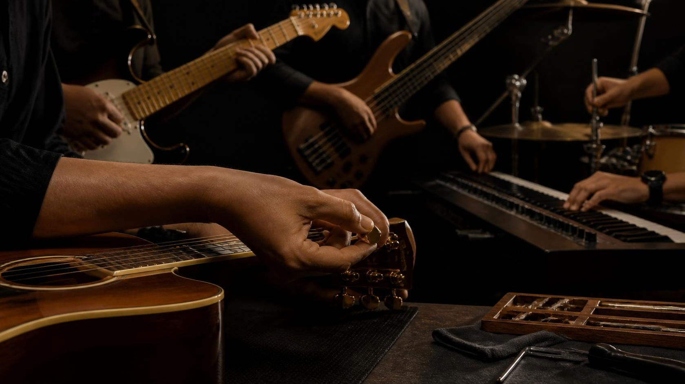

Built with intent
The system should serve the song.
Hiraya’s electronics story is about useful choices: dependable interaction, musical response, and a setup that feels natural to the person playing it.

Instrument details
Thoughtful signal paths, controls, and hardware choices that support the player without distracting from the music.
Voice
Pickup direction can be discussed around the instrument’s role, the player’s touch, and the sound they want to bring forward.
Control
Controls should feel clear and reachable, supporting fast changes while keeping the player in the moment.
Foundation
Hardware and electronics details are confirmed per product or custom conversation; specifications remain editable until finalized.
Built with intent
Hiraya’s electronics story is about useful choices: dependable interaction, musical response, and a setup that feels natural to the person playing it.
